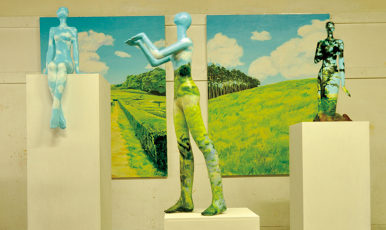
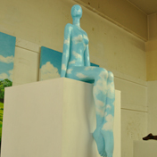
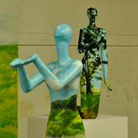
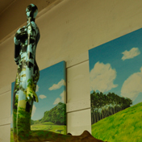

人と自然の調和をテーマとした
インスタレーション作品の制作研究
|
peace×piece 平面 1455×1120 |

現代社会において人と自然が直に触れ合う機会が減少しているように思う。
そんな中東日本大震災という形で自然の力を体感し
人は自然の一部であり自然によって生かされていると改めて感じた。
人と自然の調和のとれた本来の理想の状態をイメージし、この作品の制作を行った。
坂下 摩倫
Sakashita Marin
1989年7月 岩手県滝沢村生まれ